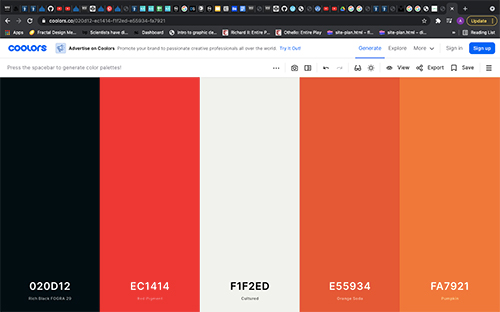

Color Scheme
I plan on using Black in the background of the body and header area. Then I plan on using a red or maroon type color for the header text and as an accent color. Finally, I would use white for the body text.
I plan on using Black in the background of the body and header area. Then I plan on using a red or maroon type color for the header text and as an accent color. Finally, I would use white for the body text.